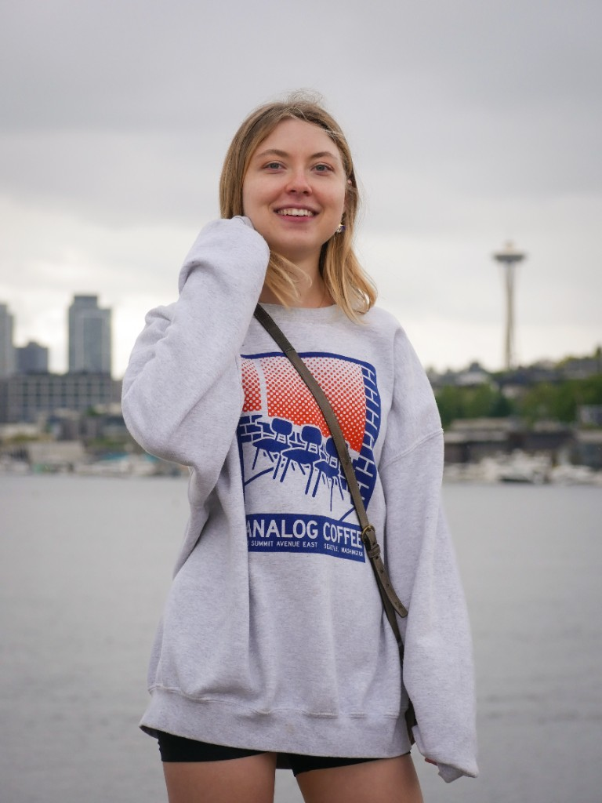

Persistence Running
In-person run coaching, training plans, and massage.
Savannah coaches in person in Bridle Trails, writes plans for 5K through marathon, and offers massage for wellness and recovery.
Coaching
In-person run coaching.
This is in-person run coaching. Savannah meets you for the session—on the roads, the trails, or wherever you train—and builds the work around your life, your terrain, and your body.
- Accountability
- 1-on-1
- Safety
- Results
- Not a runner yet?
- Form correction
Training plans
Plans for 5K, 10K, half, and marathon.
Season-long training written around your life, your terrain, and the race you’re pointing toward—whether that’s your first 5K or 26.2.
- 5K
- 10K
- Half marathon
- Marathon
Massage therapy
Massage for wellness and recovery.
Savannah also offers licensed massage therapy for wellness and recovery at a spa. Book through the spa when you’re ready to come in.
Book at the spa
About
Savannah Schrader
Savannah is a runner who moved to the Pacific Northwest for the mountains, the trails, and a life built around endurance sports—hiking, skiing, cycling, and running. She has lined up for hundreds of 5Ks and 10Ks, and she is currently training for the Seattle Marathon.
- Credentials
- RRCA Level 1 · WA LMT
FAQ
Questions, answered.
What is in-person run coaching?
Savannah meets you for the session in Bridle Trails and the surrounding area. It’s 1-on-1 coaching on the roads or trails—accountability, safety, form, and workouts specific to your goal.
Do you write training plans?
Yes. Plans cover 5K, 10K, half marathon, and marathon, written around your life and the race you’re pointing toward.
Where do sessions happen?
In-person run coaching is based in Bridle Trails. Savannah can meet you there and in the surrounding area at a time that works for you.
How do I book a massage?
Massage is for wellness and recovery and is booked at the spa. Use the massage section to go to booking, or ask Savannah if you aren’t sure where to start.
How do I get started?
Coaching begins with a free 15-minute consultation. Use Book a session or send a note through the contact form.
What are your hours?
Mondays, Wednesdays, Fridays, and Saturdays, 7am–6pm.
Contact
I'd love to hear from you.
Tell Savannah what you're hoping for. Coaching begins with a free 15-minute consultation. Massage is booked at the spa.
- Studio Bridle Trails, Bellevue, Washington
- Hours Mondays, Wednesdays, Fridays, and Saturdays, 7am–6pm
Received